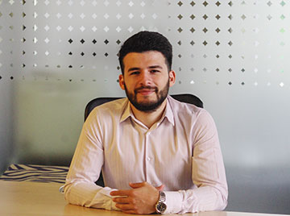

Front-end Developer
Mihai Parauta

Summary
I have a background as an installation engineer in the construction industry, where I have worked on various projects. My responsibilities included coordinating teams, managing different projects, and actively contributing to the development phase of each project
Recently, I have transitioned into the field of front-end development. I am now focusing on honing my skills as a front-end developer and leveraging my prior experience to deliver high-quality web applications.
Education
- Infrared Training&Consulting Center SRL
- Period: May 2021
- Qualification obtained: Thermography equipment operator
- Tehnical University of Constructions Bucharest - Faculty of Installations' Engineering, Master's Degree Program: Energy Efficiency of Installations in Buildings
- Period: 2018-2020
- Qualification obtained: Master's degree
- Tehnical University of Constructions Bucharest - Faculty of Installations' Engineering
- Period: 2013-2017
- Qualification obtained: Installations' Engineer in constructions
Work experience
- Professional Engineering Solutions
- Period: 2017-2023
- Position: Installation Engineer in Constructions
- Responsibilities:
- Development and coordination of projects for the identification, analysis and prioritization of residential buildings for thermal rehabilitation according to the legislation in force;
- Analysis and correlation of data specific to the Energy Audit, of the Documentation for Approving Intervention Works, of the Tehnical Documentation for obtaining a Building Permit and of the Tehnical Project documentations;
- Verification of documentation and execution works for quality assurance in construction projects, performed at nZEB standards;
- Tehnical assistance support
- TUD Business Consulting SRL
- Period: 2017-2023
- Position: Installations' tehnician
- Responsibilities:
- Updating databases, centralized files, documentation in physical and electronic format
- Centralization of report data in specific formats
- Participation in any activity specific to the department
Skills
- Increased attention to detail
- Ability to collaborate, to analyze tasks and responsibilities
- Coordination skills and organizational spirit
- Communication and interrelationship
- Adaptability, fast assimilation of new information
- Perseverence, punctuality
Awards and certifications
- Professional training "The legal framework and concepts for the realization of buildings with almost zero energy consumption (nZEB)"
More about me